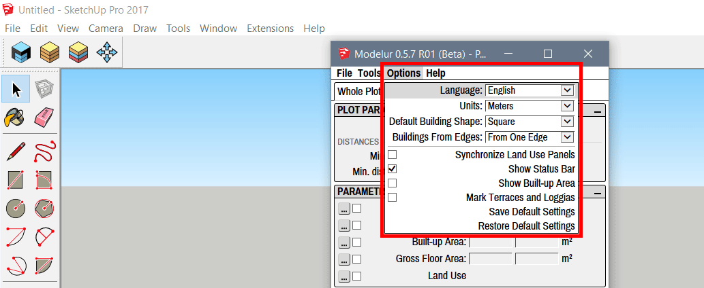

3. Quick Start
This section will quickly introduce you to the structure of Modelur's User Interface. Getting to know its logic will help you easily integrate it into your regular workflow.
Initialize Modelur¶
Once Modelur is installed you have two options to initialize it. First option is to click on the blue icon in Modelur Toolbar. This toolbar shows up once Modelur is installed (Figure 3.01).

Second option to initialize Modelur is to navigate to it through SketchUp menu Extensions → Modelur → Initialize Modelur (Figure 3.02).

Once Modelur is initialized, its user interface is opened. Modelur's main User Interface (UI, Figure 3.03) is composed of five parts: Menu, Tabs, Panels and Statusbar.
User Interface Overview¶
Menu¶
Menu is located at the top of the User Interface. It is the place where you go to when you want to save data (e.g. export Urban Control Indicators), change preferences (e.g. Language) or get some help (e.g. open this User Guide). Detailed description is available in the Menu section.
Tabs¶
Tabs are located below the Menu. They represent a groups of similar tasks. Currently there are five of them: Whole Plot tab (a place to set default values for the whole plot), City Block tab (a place to set values for selected City Blocks), Land Use tab (a place to create and edit Land Uses and their parameters), Building tab (a place to modify selected Buildings) and Survey (a place where you can monitor achieved Urban Parameters, such as FAR, required Parking Spaces, etc.). Detailed description is available in the Reference section.

Panels¶
Panels are the windows inside each tab. They represent a group of related parameters (e.g. Plot Parameters or Land Use Requirements). Detailed description is available in each of the corresponding Reference section.
Status Bar¶
Statusbar is located at the bottom of the UI. It's task is to explain to you the meaning of abbreviated text when you hover over it. You can turn Status bar on or of in Menu → Options → Show status bar.
Quick Start Guide¶
Before you start¶
Make sure you have installed Modelur and quickly check out the structure of Modelur User Interface, so you get acquainted with basic terminology and UI logic. It should not take you more than two and a half minutes. :-)
Step 1 - Initialize Modelur model and configure it¶
Let's start from the very beginning. With SketchUp open you can initialize Modelur by clicking on a blue Modelur icon in toolbar or via SketchUp menu Extensions → Modelur → Initialize Modelur (as shown in Initialize Modelur section). Once initialized, go to Options menu to set Modelur UI Language and dimension units (meters or feet) according to your needs (Figure 3.04).

Step 2 - Create Modelur Building¶
Once Modelur is initialized and set up, you can create Modelur Building by either clicking on a yellow Modelur Building icon in the Toolbar (1), by clicking on the Create Building (2) entry in SketchUp menu Extensions → Modelur or by clicking on the Create button (3) inside Building tab of Modelur’s user interface (Figure 3.05).
Regardless of which way you choose to create Modelur Buildings, there are always two options - you can create a Building based on a predefined floor plan or based on what you draw. We will take a look at these two in the following paragraphs.
Creating Building based on predefined shape
If nothing is selected in your .skp model, Modelur will create a Building with predefined floor plan. This can be selected under Modelur’s Options → Default building shape as shown below. At the moment (Modelur v0.5.7), you can chose among three basic floor plans - Square, Circle and L-Shape (Figure 3.06).
When new Building is initialized this way, it is created based on the default Parameters as specified for the Whole Plot or Parametric Maps (if defined). We will take a look at those later.

Creating Building based on specific floor plan shape
More commonly, you will want to create your own floor plan and create Building based on its shape. To do this, simply draw a horizontal face (Modelur will select it automatically if it is being created) using standard SketchUp’s procedure, or select existing face, and click on Create Building button (Figure 3.07). This will create a new Modelur Building based on selected face and default parameters.
Alternatively you can also create Building based on selected closed edge loop. To do so, select at least one edge of the loop and click on Create Building button.

Step 3 - Changing the Parameters¶
Parameters work hierarchically in Modelur. This means that the object (eg. Building) first looks if its parameter in question (eg. Number of Storeys) is defined. If yes, it uses it. If not, it uses the Parameter from its parent object, which is either a Complex Building (if the Building is part of Complex Building) or City Block. If the Building finds the parameter value in its parent object, it uses it. If not, it looks further up all the way to the Whole Plot, which is a top-most object in Modelur and holds all Parameters needed to define a Building (Figure 3.08).

Explanation: BUILDING 1 has no parameter defined, so it looks it up from its parent, CITY BLOCK 1. Since CITY BLOCK 1 also has no parameter specified, it looks it up from the WHOLE PLOT, where it finds both parameters, which are in turn applied to the BUILDING 1. On the other hand, BUILDING 2 has specified Parameter for Number of Storeys (2) so it looks no further. But it's missing Land Use Parameter which can again be found in the WHOLE PLOT.
Now that you understand how objects hierarchy works in Modelur, all you need to remember is the hierarchy order itself (bottom-up): Building → Complex Building → City Block → Whole Plot.
Hold down Shift key to use mouse scroll
If you press Shift key while hovering over parameter input field, you can also use mouse scroll to change number. Use Shift+Ctrl to increase the step by factor 10.
Overloaded Parameters¶
From now on we will call the Parameters that are defined for specific Buildings "overloaded" Parameters. This term applies only to the specific Parameters of specific Buildings. Eg. when we define Parameter for Number of Storeys in Building A, but not in Building B, only the Building A has overloaded parameter for Number of Storeys. We can quickly check which Parameters are overloaded by selecting the Building in question and opening Building tab in Modelur User Interface (Figure 3.09). There - under Selected Building Parameters panel - all overloaded Parameters are checked and ready to be changed. This is also the place to initialize overloaded Parameters. If we want to change, eg. Land Use of the Building, go ahead - check it and change its value.

Please note that overloading / changing one Parameter might also overload other, connected parameters. For example, when you overload Number of Storeys parameter, this will also overload Building Height and Gross Floor Area Parameters, as they are directly connected to Number of Storeys. In other words, when Number of Storeys change, Building’s Height and Gross Floor Area change, too.